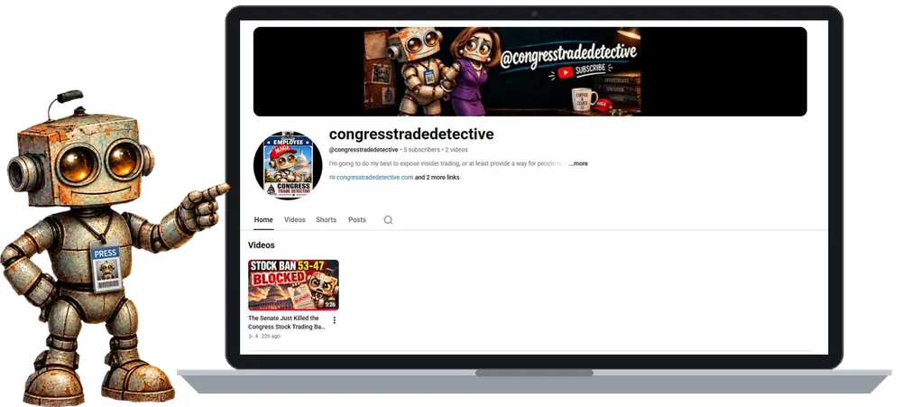
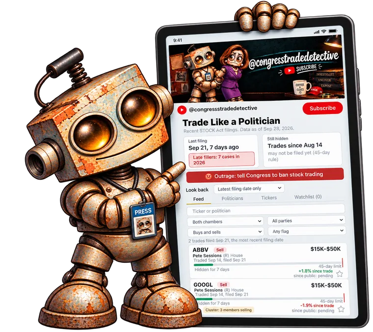

Congress · Stocks · Public record
Every STOCK Act trade, tracked.
Members of Congress have to disclose their stock trades. Congress Trade Detective pulls those filings into one clean feed: who traded, what, when, and how long they waited to report it.
- Official filings
- Plain English
- No paywall
Who's behind Hal
Built by Treena Lynch.
Shipped with AI.
I'm a full-stack systems developer with 20+ years in C#, SQL, JavaScript and SuiteScript/NetSuite. Congress Trade Detective is my proof of work: I'm moving into AI-augmented development, and instead of just talking about it, I'm shipping real products. Every app, page and video below was designed, built and launched by me, with AI as my pair programmer.
Led a two-year redesign of a legacy ticketing system at World Wide Group: decoupled third-party credit card processing into a WCF service with multi-stage async transaction states, serving 50K+ concurrent users. Also rebuilt a failing POV system's local application and infrastructure.
01 Apple apps
Blackjack strategy trainer with live odds and shoe tracking. React Native / Expo.
Turns your own photos into puzzles. No ads, no account, works offline. iPhone and iPad. React Native / Expo.
Trade Like a Politician: every STOCK Act filing in one feed. No login, no tracking. Web + iOS via Capacitor.
02 This website
Designed, written and coded by me: a static site on GitHub Pages with a custom domain, the Hal mascot brand, a print-on-demand merch shop and a working contact form.
03 YouTube channel

Hal hosts long-form breakdowns and Shorts on congressional trades: scripts, thumbnails and AI-generated visuals, produced end to end.
New merch drop
Wear the evidence.
Tees, crewneck sweatshirts and dad caps featuring Hal and his latest case files. Printed on demand, shipped to your door.
How it works
Follow the disclosures.
They trade
A member of Congress, or their spouse or dependent child, buys or sells a stock.
They file
The STOCK Act gives them up to 45 days to report trades over $1,000, in value ranges, not exact amounts.
Hal reports
The tracker pulls the filing, decodes it, and adds it to the feed with a link to the source.

The app: Trade Like a Politician
An iPhone and iPad app that tracks every stock trade members of Congress disclose under the STOCK Act. See the latest filings, who files late, how many days each trade stayed hidden, how the stock has moved since, cluster trades, and your own watchlist. Free, no login, no tracking.